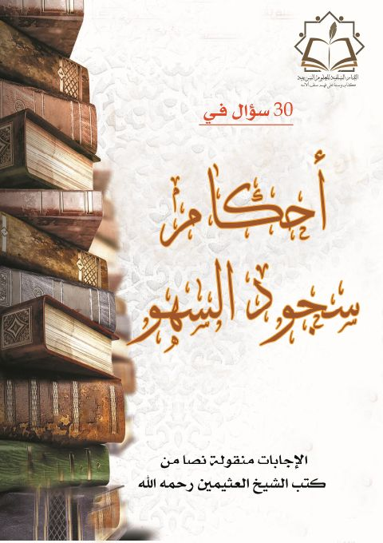
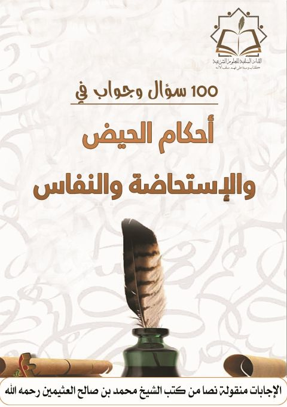
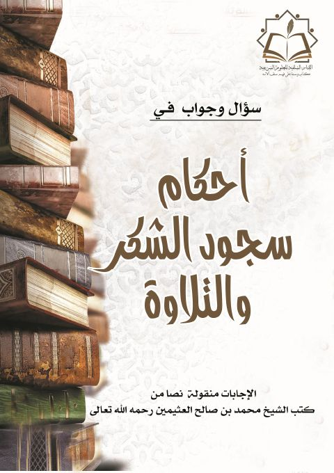

30 سؤال وجواب في أحكام سجود السهو- ملون 30 سؤال وجواب في أحكام سجود السهو- ملون محمد بن صالح العثيمين
100 سؤال وجواب في أحكام الحيض والاستحاضة والنفاس- ملون 100 سؤال وجواب في أحكام الحيض والاستحاضة والنفاس- ملون محمد بن صالح العثيمين
أحكام سجود السهو والتلاوة- ملون أحكام سجود السهو والتلاوة- ملون محمد بن صالح العثيمين